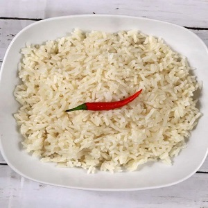

My Jamaican Recipes
Coconut Rice
This coconut rice recipe is a sweet and savory side dish that pairs well with a variety of dishes. The rice is cooked in coconut milk, giving it a rich and creamy texture, while the addition of ginger and garlic adds depth of flavor.
Ingredients
- 1 cup long-grain rice
- 1 1/2 cups coconut milk
- 1/2 cup water
- 1 tbsp grated fresh ginger
- 2 cloves garlic, minced
- 1/2 tsp salt
- 1/4 cup chopped fresh cilantro
Instructions
- Rinse the rice in a fine-mesh strainer under cold running water until the water runs clear.
- In a medium saucepan, combine the rice, coconut milk, water, ginger, garlic, and salt and bring to a boil over high heat.
- Reduce the heat to low, cover the pan with a tight-fitting lid, and simmer for 18-20 minutes, or until the rice is tender and the liquid has been absorbed.
- Remove the pan from the heat and let stand, covered, for 5 minutes.
- Fluff the rice with a fork and stir in the chopped cilantro.
- Serve hot.